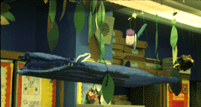
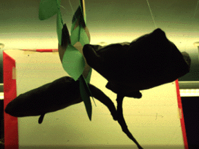

Kelp Forest
Creating an Ocean Ecosystem in the Classroom

Dr. Rikki Asher, Director, Art Education CUNY@ Queens College
asherikki@pipeline.com
Ninth graders at Urban Peace Academy (an alternative high school in East Harlem, New York)
transformed their classroom into an ocean ecosystem. Collaboratively researching the Pacific
Ocean's Kelp Forest, student groups selected sea creatures to create their dimensional projects.
Students:
- Explored the three essential questions through an examination of the Pacific Kelp Forest.
- What do creatures in the Kelp Forest need to survive?
- How are living things in this ecosystem interdependent?
- How do humans impact upon life in the Kelp Forest?
- Discovered the broad meaning of environment by observing, drawing and studying diverse ecosystems
- Created two and three dimensional visual interpretations of a creature from the
environment.
- Completed an exhibition where they researched and created a replica of one of the
creatures in the Kelp Forest in the classroom. Included in the Exhibition was a written
research paper, an oral presentation, field trips and a formal scientific investigation.

 Return to Main Page
Return to Main Page
Comments
Please send e-mail to: June Julian jj68@nyu.edu